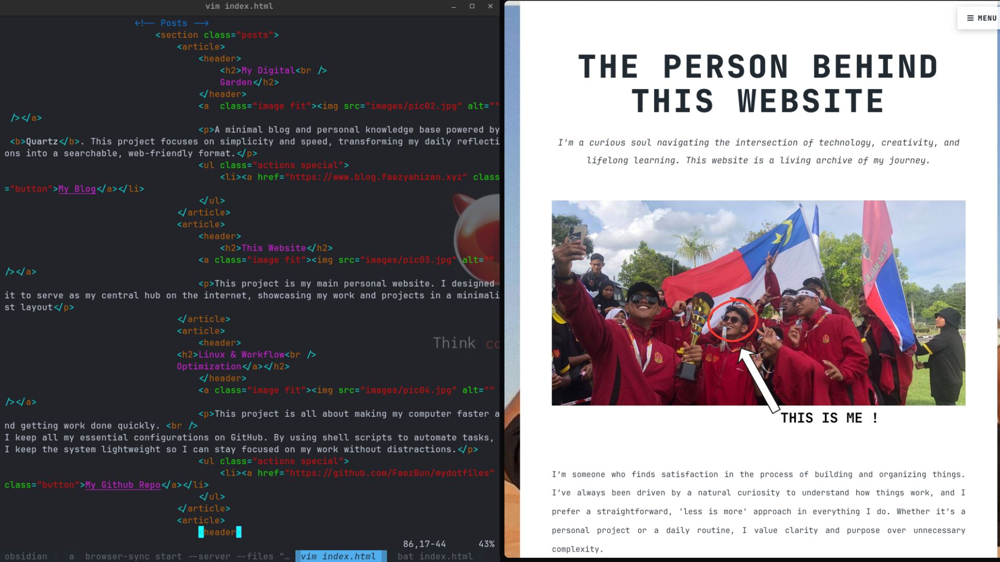
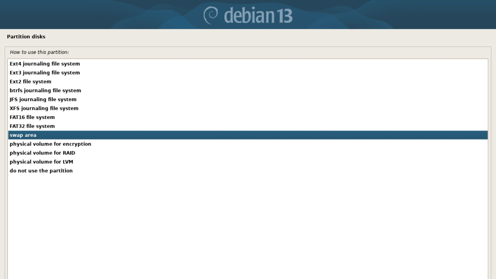

I store all my dotfiles in GitHub so I can easily manage and sync my setup. Whenever I switch machines or reinstall my system, I just clone the repo and restore everything instantly, keeping my environment consistent and easy to maintain.

I also repurposed an unused laptop by turning it into an Ubuntu Server mainly for playing music. It runs headless and acts as a lightweight music machine, letting me stream and control playback remotely while keeping my main system free and clutter-free.
The Fast Log Analyzer is a high-performance engine that utilizes Parallel Computing to shred through massive datasets. By distributing the workload across all available CPU threads, it transforms an ordinary laptop into a forensic powerhouse, detecting over 1.2 million threats in a fraction of the time.